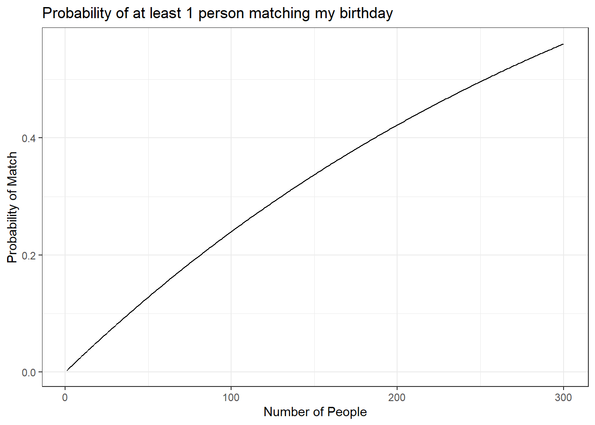

Chapter 8 Probability Rules
8.1 Objectives
- Define and use properly in context all new terminology related to probability to include but not limited to: outcome, event, sample space, probability.
- Apply basic probability and counting rules to find probabilities.
- Describe the basic axioms of probability.
- Use
Rto calculate and simulate probabilities of events.
8.2 Homework
8.2.1 Problem 1
1. Let \(A\), \(B\) and \(C\) be events such that \(\mbox{P}(A)=0.5\), \(\mbox{P}(B)=0.3\), and \(\mbox{P}(C)=0.4\). Also, we know that \(\mbox{P}(A \cap B)=0.2\), \(\mbox{P}(B \cap C)=0.12\), \(\mbox{P}(A \cap C)=0.1\), and \(\mbox{P}(A \cap B \cap C)=0.05\). Find the following:
\(\mbox{P}(A\cup B)\) \[ \mbox{P}(A\cup B) = \mbox{P}(A)+\mbox{P}(B)-\mbox{P}(A\cap B)= 0.5+0.3-0.2 = 0.6 \]
\(\mbox{P}(A\cup B \cup C)\) \[ \mbox{P}(A\cup B \cup C) = \mbox{P}(A)+\mbox{P}(B)+\mbox{P}(C)-\mbox{P}(A\cap B)-\mbox{P}(A\cap C)-\mbox{P}(B\cap C)+\mbox{P}(A\cap B \cap C) \] \[ = 0.5+0.3+0.4-0.2-0.12-0.1+0.05 = 0.83 \]
\(\mbox{P}(B'\cap C')\) \[ \mbox{P}(B'\cap C')=\mbox{P}((B\cup C)') = 1-\mbox{P}(B\cup C) = 1-[\mbox{P}(B)+\mbox{P}(C)-\mbox{P}(B\cap C)] \] \[ = 1-(0.3+0.4-0.12) = 0.42 \]
\(\mbox{P}(A\cup (B\cap C))\) \[ \mbox{P}(A\cup (B\cap C)) = \mbox{P}(A)+\mbox{P}(B\cap C) -\mbox{P}(A\cap B \cap C) = 0.5+0.12-0.05 = 0.57 \]
\(\mbox{P}((A\cup B \cup C)\cap (A\cap B \cap C)')\) \[ \mbox{P}((A\cup B \cup C)\cap (A\cap B \cap C)')=\mbox{P}(A\cup B \cup C)-\mbox{P}(A\cap B \cap C) = 0.83-0.05 = 0.78 \]
8.2.2 Problem 2
2. Consider the example of the family in the reading. What is the probability that the family has at least one boy?
\[
\mbox{P}(\mbox{at least one boy})=1-\mbox{P}(\mbox{no boys})=1-\mbox{P}(\mbox{GGG})=1-\frac{1}{8} = 0.875
\]
8.2.3 Problem 3
3. The Birthday Problem Revisited.
- Suppose there are \(n=20\) students in a classroom. My birthday, the instructor, is April 3rd. What is the probability that at least one student shares my birthday? Assume only 365 days in a year and assume that all birthdays are equally likely.
\[ \mbox{P}(\mbox{at least one other person shares my bday})=1-\mbox{P}(\mbox{no one else has my bday}) = \]
\[ 1-\left( \frac{364}{365}\right)^{20} = 0.0534 \]
- In
R, find the probability that at least one other person shares my birthday for each value of \(n\) from 1 to 80. Plot these probabilities with \(n\) on the \(x\)-axis and probability on the \(y\)-axis. At what value of \(n\) would the probability be at least 50%?
Generalizing, \[ \mbox{P}(\mbox{at least one other person shares my bday})=1-\mbox{P}(\mbox{no one else has my bday}) = 1-\left( \frac{364}{365}\right)^{n} \]
Check our function.
## [1] 0.05339153gf_line(mybday(n)~ n,
xlab="Number of People",
ylab="Probability of Match",
title="Probability of at least 1 person matching my birthday") %>%
gf_theme(theme_bw)
## [1] 253 254 255 256 257 258 259 260 261 262 263 264 265 266 267 268 269 270 271
## [20] 272 273 274 275 276 277 278 279 280 281 282 283 284 285 286 287 288 289 290
## [39] 291 292 293 294 295 296 297 298 299 300So 253 people.
8.2.4 Problem 4
- Thinking of the cards again. Answer the following questions:
- Define two events that are mutually exclusive.
The first card drawn is red.
The first card drawn is black.
- Define two events that are independent.
The first card drawn is black.
The first card drawn is a face card.
- Define an event and its complement.
The first card drawn is less than 5.
The first card drawn is equal to or more than 5.
8.2.5 Problem 5
- Consider the license plate example from the reading.
- What is the probability that a license plate contains exactly one “B”?
#fourth spot
num4<-10*10*10*1*25*25
#fifth spot
num5<-10*10*10*25*1*25
#sixth spot
num6<-10*10*10*25*25*1
denom<-10*10*10*26*26*26
(num4+num5+num6)/denom## [1] 0.1066796- What is the probability that a license plate contains at least one “B”?
\[ 1-\mbox{P}(\mbox{no B's}) \]
## [1] 0.11100368.2.6 Problem 6
- Consider the party example in the reading.
- Suppose 8 people showed up to the party dressed as zombies. What is the probability that all three awards are won by people dressed as zombies? \[ \frac{8\cdot 7 \cdot 6}{25\cdot 24 \cdot 23} \]
## [1] 0.02434783- What is the probability that zombies win “most creative” and “funniest” but not “scariest”? \[ \frac{8 \cdot 17 \cdot 7}{25 \cdot 24 \cdot 23} \]
## [1] 0.068985518.2.7 Problem 7
- Consider the cards example from the reading.
- How many ways can we obtain a “two pairs” (2 of one number, 2 of another, and the final different)?
We have to pick the rank of the two pairs.
\[\binom{13}{2}\] Notice here the order does matter because a pair of Kings and 4s is the same as a pair of 4s and Kings. This is different from the full house example. Make sure you understand this point.
Now we have to pick two of the fours cards for each rank
\[\binom{4}{2}\binom{4}{2}\]
And finally we need the last card to come from the 44 remaining cards so that we don’t get a full house.
\(\binom{44}{1}\)
Putting it all together:
\(\binom{13}{2}\binom{4}{2}\binom{4}{2}\binom{44}{1}\)
## [1] 123552- What is the probability of drawing a “four of a kind” (four cards of the same value)?
\[ \mbox{P}(\mbox{4 of a kind})=\frac{\binom{13}{1}\binom{4}{4}\binom{48}{1}}{\binom{52}{5}} \]
## [1] 0.0002400968.2.8 Problem 8
- Advanced Question: Consider rolling 5 dice. What is the probability of a pour resulting in a full house?
First pick the value for the three of a kind, there are 6. Then pick the value from the remaining 5 for the two of a kind. This is actually a permutation. There are 30 distinct “flavors” of full house (three 1’s & two 2’s, three 1’s & two 3’s, etc.). In the reading we did this as \[ \binom{6}{1} \times \binom{5}{1} \] We now have the 5 dice. We have to select three to have the same value and the order doesn’t matter since they are the same value. Thus we multiple by \(\binom{5}{3}\). Divide this by the total distinct ways the dice could have landed (assuming order matters). \[ \mbox{P}(\mbox{full house}) = \frac{30 \times \frac{5!}{3!2!}}{6^5} \] \[ \mbox{P}(\mbox{full house}) = \frac{\binom{6}{1} \times \binom{5}{1} \times \binom{5}{3}}{6^5} \]
## [1] 0.03858025Simulating is tough so let’s write some code that may help.
##
## 1 3 4 5
## 1 2 1 1## [1] FALSE## temp
## 1 2
## 3 2## [1] TRUELet’s write a function.
## [1] TRUEset.seed(751)
results<-do(10000)*full_house(sample(1:6,size=5,replace=TRUE))
mean(~full_house,data=results)## [1] 0.039